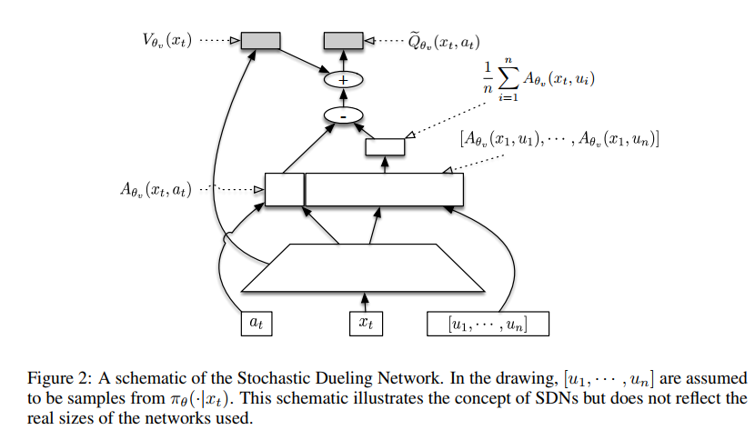
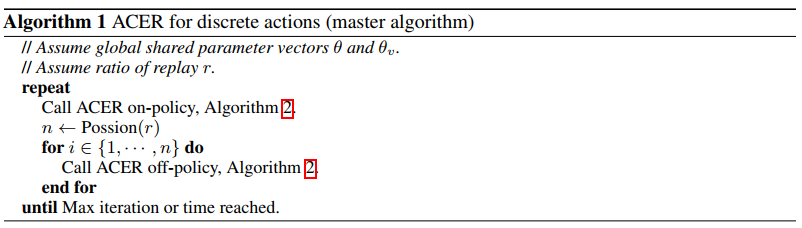
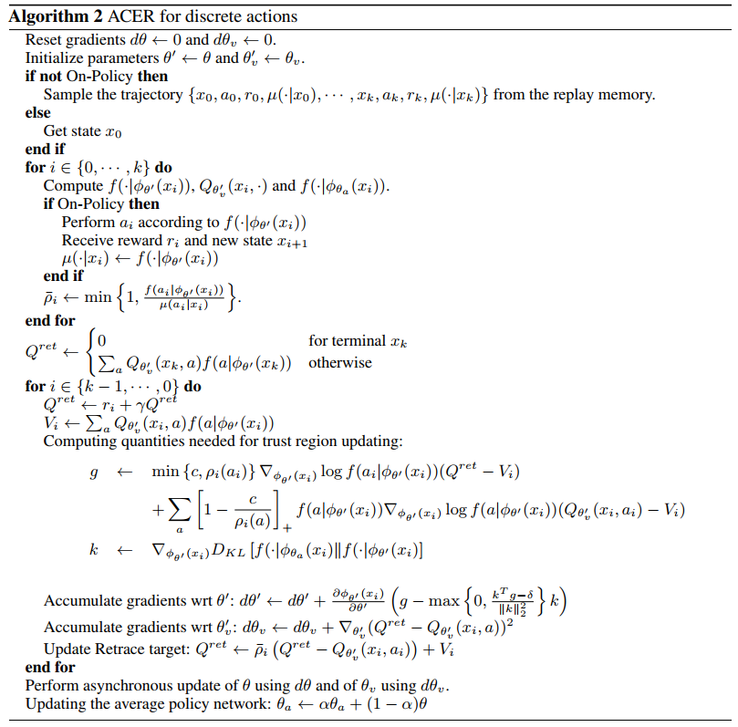
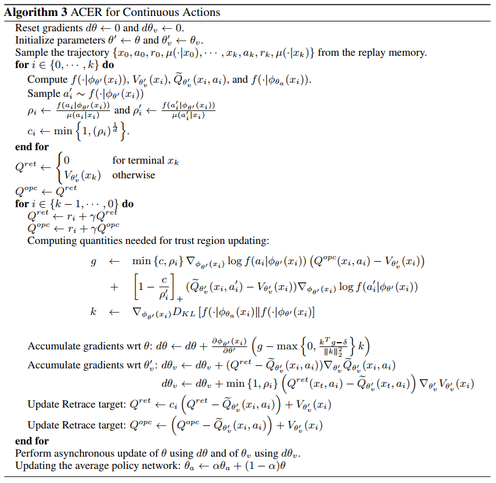

Sample Efficient Actor-Critic With Experience Replay
论文概述
该论文将DQN的Experience Replay思想引入AC算法，提出了ACER算法。该算法是以前算法几种思想的集合。它使用了多workers（就像A2C一样），使用了DQN算法里面的replay buffer，使用Q_retrace来进行Q值估计，也使用了重要性采样和信任域。
论文分析
Discrete AC
首先Experience Replay是off-policy算法，也就是说behavior策略和target策略不是同一个策略，我们使用behavior策略$\mu$得到trajectory ${x_0,a_0,r_0,\mu(\cdot|x_0),\cdots,x_k,a_k,r_k,\mu(\cdot|x_k)}$,我们可以得到重要性加权策略梯度：
$$
\hat g^{imp}=(\prod^k_{t=0}\rho_t)\sum_{t=0}^k(\sum_{i=0}^k\gamma^ir_{t+i})\triangledown\log\pi_{\theta}(a_t|x_t)\tag{1}
$$
其中$\rho_t=\frac{\pi(a_t|x_t)}{\mu(a_t|x_t)}$代表重要性权重。我们可以和策略梯度的公式进行对比一下，发现最主要的不同点就是前面多了一个$\rho_t$的累乘，而$\rho_t$的大小是没有任何限制的，这会使得$\hat g^{imp}$的方差过大，而方差过大说明结果的波动范围大，也就是结果有很大的不确定性，这明显不是我们想要得到的结果。另外没有对$\rho_t$进行限制也使得该估计是无偏估计，如果进行相应的truncate，那么方差会变小，但是bias会变大！
为了解决bias和variance的问题，又有人提出了基于极限分布的marginal值函数：
$$
g^{marg}=E_{x_t\sim\beta,a_t\sim\mu}[\rho_t\triangledown_{\theta}\log\pi_{\theta}(a_t|x_t)Q^{\pi}(x_t,a_t)]\tag{2}
$$
其中$E_{x_t\sim\beta,a_t\sim\mu}[\cdot]$是根据策略$\mu$的极限分布$\beta(x)=\lim_{t\rightarrow\infty}P(x_t=x|x_0,\mu)$的期望。该等式有两个需要注意的地方，首先是它是基于$Q^{\pi}$而不是$Q^{\mu}$,结果造成我们必须要去估计$Q^{\pi}$;其次，等式里面没有重要性权重$\rho_t$的累乘了，现在只需要估计边缘重要性权重$\rho_t$,这样一来我们得到的结果的variance就变小了。
关于$Q^{\pi}$的估计，可以使用lambda returns:$R_t^{\lambda}=r_t+(1-\lambda)\gamma V(x_{t+1})+\lambda\gamma\rho_{t+1}R_{t+1}^{\lambda}$.但是该方法需要我们提前设定$\lambda$的值来权衡bias和variance。并且就算是我们采用小的$\lambda$来减少variance，偶然的大的采样权重也会造成不稳定性（因为$\lambda$虽然在后面一项，但是我们并没有对$\rho$进行限制大小，突然来一个非常大的$\rho$会造成后面一项的值很大，就会造成不稳定）。本文基于前面的不足之处，使用了Retrace算法来估计$Q^{\pi}$的值。
基于behavior策略产生的trajectory，Retrace估计的递归表达式如下(这里为了便于表示，我们仅仅考虑$\lambda=1$的情况)：
$$
Q^{ret}(x_t,a_t)=r_t+\gamma\bar\rho_{t+1}[Q^{ret}(x_{t+1},a_{t+1})-Q(x_{t+1},a_{t+1})]+\gamma V(x_{t+1})\tag{3}
$$
其中$\bar\rho_t$是被限制大小后的重要性权重,$\bar\rho_t=min{c,\rho_t}$,$\rho_t=\frac{\pi(a_t|x_t)}{\mu(a_t|x_t)}$,Q是对$Q^{\pi}$的当前估计值，$V(x)=E_{a\sim\pi}Q(x,a)$.
递归Retrace算法依赖于对Q的估计。为了计算Q，在离散动作空间，作者使用了一个卷积神经网络，该卷积神经网络有两个输出，一个输出$Q_{\theta_v}(x_t,a_t)$,另一个输出$\pi_{\theta}(a_t|x_t)$,这和A3C的网络结构相似，但是A3C的其中一个输出是$V_{\theta_v}(x_t)$,不是这里的$Q_{\theta_v}(x_t,a_t)$，但是我们知道对$Q_{\theta_v}(x_t,a_t)$在策略$\pi_{\theta}$下求期望就是$V_{\theta_v}(x_t)$.
为了近似策略梯度$g^{marg}$,ACER算法使用$Q^{ret}$来估计$Q^{\pi}$.
对于$Q_{\theta_v}(x_t,a_t)$的学习，本文再次使用$Q^{ret}(x_t,a_t)$作为均方差损失的学习目标来更新参数$\theta_v$,下面是标准的梯度计算公式：
$$
(Q^{ret}(x_t,a_t)-Q_{\theta_v}(x_t,a_t))\triangledown_{\theta_v}Q_{\theta_v}(x_t,a_t))\tag{4}
$$
其中前面的相减项是误差损失计算，与后面的梯度相乘就是反向传播的梯度反向传播。关于论文中提到的两点Retrace的优点我是这样理解的：1.我们知道Critic算法是回合更新制，但是Retrace算法是基于return的，也就是说实现Critic算法的单步更新，使得Critic的学习速度更快；2.Retrace降低了策略梯度的bias。
重要性(采样)权重限制
等式(2)中的边缘重要性权重$\rho_t$的大小没有限制，会造成$g^{marg}$不稳定，引起方差variance过大的问题。我们可以通过对$g^{marg}$进行分解来对$\rho_t$的大小进行截断，然后引入矫正项:
$$
\begin{align}
g^{marg}&=E_{x_ta_t}[\rho_t\triangledown\log\pi_{\theta}(a_t|x_t)Q^{\pi}(x_t,a_t)]\cr
&=E_{x_t}[E_{a_t}[\bar\rho_t\triangledown_{\theta}\log\pi_{\theta}(a_t|x_t)Q^{\pi}(x_t,a_t)]+E_{a\sim\pi}([\frac{\rho_t(a)-c}{\rho_t(a)}]_+\triangledown_{\theta}\log\pi_{\theta}(a|x_t)Q^{\pi}(x_t,a))]\tag{5}
\end{align}
$$
其中,$\bar\rho_t=\min{c,\rho_t}$,$\rho_t=\frac{\pi(a_t|x_t)}{\mu(a_t|x_t)}$,$\rho_t=\frac{\pi(a|x_t)}{\mu(a|x_t)}$,$[x]_{+}=x$表示如果$x>0$值为x,否则值为0.需要注意的是上面的期望是基于行为策略$x_t\sim\beta,a_t\sim\mu$的极限状态分布.该等式第一项里面的重要性权重截断$\bar\rho_t$使得结果的方差不会太大，矫正项保证我们的结果是无偏估计。
在等式5中，使用$Q_{\theta_v}(x_t,a_t)$替换$Q_{\pi}(x_t,a)$,这个修改叫使用偏差矫正技巧截断，修改后得到：
$$
\hat g^{marg}=E_{x_t}[E_{a_t}[\bar\rho_t\triangledown_{\theta}\log\pi_{\theta}(a_t|x_t)Q^{ret}(x_t,a_t)]+E_{a\sim\pi}([\frac{\rho_t(a)-c}{\rho_t(a)}]_{+}\triangledown_{\theta}\log\pi_{\theta}(a|x_t)Q_{\theta_v}(x_t,a))]\tag{6}
$$
其中的第一项的$Q^{ret}$是上面所说的使用$Q^{ret}$来近似$Q^{\pi}$.上面的等式包含一个对马尔可夫平稳分布的期望，我们可以通过基于行为策略$\mu$采集trajectory ${x_0,a_0,r_0,\mu(\cdot|x_0),\cdots,x_k,a_k,r_k,\mu(\cdot|x_k)}$来逼近它。其中的$\mu(\cdot|x_t)$是策略向量.基于这些trajectory，我们能够计算off-policy ACER梯度：
$$
\begin{align}
\hat g^{acer}&=\bar \rho_t\triangledown_{\theta}\log\pi_{\theta}(a_t|x_t)[Q^{ret}(x_t,a_t)-V_{\theta_v}(x_t)]\cr
&+E_{a\sim\pi}([\frac{\rho_t(a)-c}{\rho_t(a)}]_{+}\triangledown_{\theta}\log\pi_{\theta}(a|x_t)[Q_{\theta_v}(x_t,a)-V_{\theta_v}(x_t)])\tag{7}
\end{align}
$$
上式就是ACER梯度计算公式。在上面的表达式里面，我们减去了baseline $V_{\theta}(x_t)$来减少方差variance。值得注意的是，上式中$c=\infty$的时候，该式子就变为了只使用Retrace计算梯度;当$c=0$的时候，上式就变成了完全依赖于Q估计的AC更新。
高效可信域策略优化
AC算法的策略经常出现高方差。因此为了保证稳定性，我们得限制每一步的策略改变大小。简单实用更小的学习率不能防止偶然的大更新同时保持期望的学习速度。TRPO算法更加适合但是每次更新都需要反复计算 Fisher-vector products，导致计算开销大。本文提出了一种新的可信域策略优化方法，该方法维持一个代表过去策略的动态平均策略网络，强制新的策略不要远离该平均来保证新旧策略的差异不要过大。
我们分解我们的策略网络为两部分:分布$f$和一个产生该分布统计$\phi_{\theta}(x)$的深度神经网络.也就是说基于$f$，策略完全由网络$\phi_{\theta}:\pi(\cdot|x)=f(\cdot|\phi_{\theta}(x))$来决定。
我们使用$\phi_{\theta_a}$来代表均值策略网络，采用softly方式更新参数$\theta_a$:$\theta_a\leftarrow \alpha\theta_a+(1-\alpha)\theta$.
现在，我们根据$\phi$计算ACER策略梯度:
$$
\begin{align}
\hat g^{acer}&=\bar \rho_t\triangledown_{\phi_\theta(x_t)}\log f(a_t|\phi_{\theta}(x))[Q^{ret}(x_t,a_t)-V_{\theta_v}(x_t)]\cr
&+E_{a\sim\pi}([\frac{\rho_t(a)-c}{\rho_t(a)}]_{+}\triangledown_{\phi_\theta(x_t)}\log f(a|\phi_{\theta}(x_t))[Q_{\theta_v}(x_t,a)-V_{\theta_v}(x_t)])\tag{8}
\end{align}
$$
注意 上面公式的第二项求期望里面的log一项我认为论文里面写错了，原文为$\log f(a_t|\phi_{\theta}(x))$，但是经过我的自己前后比对和对baselines代码的分析发现这里应该就是$\log f(a|\phi_{\theta}(x_t))$.
可信域更新的两个阶段
基于均值策略网络，可信域更新包括两个阶段。第一个阶段是求解下面的具有线性化KL divergence限制的优化问题:
$$
\begin{align}
&minimize\ \frac{1}{2}\parallel \hat g_t^{acer}-z\parallel\cr
&subject\ to\ \triangledown_{\phi_{\theta}(x_t)}D_{KL}[f(\cdot|\phi_{\theta_a}(x_t))\parallel f(\cdot|\phi_{\theta}(x_t))]^Tz\leq\delta\tag{9}
\end{align}
$$
使用KKT条件，并且令$k=\triangledown_{\phi_{\theta}(x_t)}D_{KL}[f(\cdot|\phi_{\theta_a}(x_t))\parallel f(\cdot|\phi_{\theta}(x_t))]$,上式的解就是：
$$
z^\ast=\hat g_t^{acer}-\max{0,\frac{k^T\hat g_t^{acer}-\delta}{\parallel k\parallel_2^2}}k\tag{10}
$$
由9式的限制我们可以知道，当限制条件满足的时候，根据$\phi_{\theta}(x_t)$的梯度是不会有变化的（后一项max为0）。否则更新将会在k的方向成比例减小，由此有效地降低了当前策略和均值策略之间的变化率。
第二个阶段是利用反向传播。$z^\ast$根据$\phi_{\theta}$的梯度更新通过网络反向传播来计算相应参数的梯度。策略网络的参数更新遵从链式法则:$\frac{\partial\phi_{\theta}(x)}{\partial\theta}z^\ast$.其实就是复合函数的求导，但对中间函数求导，在乘以中间函数对参数的导数，这里的中间函数就是$\phi_{\theta}$.
连续动作域
对V和Q的估计
上面的分析分析是针对离散动作域的，下面我们将ACER应用到连续动作域上。
在连续动作域上面，ACER使用了Stochastic Dueling Networks（SDNs）来同时估计$V^\pi$和$Q^\pi$,同时这样能保持这两个估计之间的一致性(通过下面的图片我们也可以看出这两个估计的计算是有相互关联的，下面还会进行分析)。

每一个step，SDN都会输出$Q^\pi$的随机估计$\tilde{Q}_{\theta_v}$和$V^\pi$的确定性估计$V_{\theta_v}$,这样我们就有
$$
\tilde Q_{\theta_v}\sim V_{\theta_v}(x_t)+A_{\theta_v}(x_t,a_t)-\frac{1}{n}\sum_{i=1}^n A_{\theta_v}(x_t,\mu_i), and \ \mu_i \sim \pi_{\theta}(\cdot|x_t)\tag{11}
$$
其中的n是一个参数。我们需要注意的是后面的$\frac{1}{n}\sum_{i=1}^n A_{\theta_v}(x_t,\mu_i)$是在$x_t$状态执行n次动作选择，然后将优势进行取均值。
为什么说这两个估计具有一致性呢？我们知道$E_{\mu_{1:n}\sim\pi(\cdot|x_t)}(\tilde Q_{\theta_v}(x_t,a_t))=Q^{\pi}(x_t,a_t)$,然后我们就有$V_{\theta_v}(x_t)=E_{a\sim\pi(\cdot|x_t)}[E_{\mu_{1:n}\sim\pi}(\cdot|x_t)(\tilde Q_{\theta_v}(x_t,a))]=V_{\theta_v}(x_t)$.这就可看出两个的关联了。
可信域更新
对$V^{target}$的估计
在连续域，使用如下方法来估计$V^{target}$:
$$
V^{target}(x_t)=\min{1,\frac{\pi(a_t|x_t)}{\mu(a_t|x_t)}}(Q^{ret}(x_t,a_t)-Q_{\theta_v}(x_t,a_t))+V_{\theta_v}(x_t)\tag{12}
$$
在估计$Q^{ret}$上面，在连续动作域使用的截断重要性权重为$\bar\rho=\min{1,(\frac{\pi(a_t|x_t)}{\mu(a_t|x_t)})^{\frac{1}{d}}}$，其中d是动作空间的维度，据作者描述该形式加快了学习速度。
$\hat g_t^{acer}$推导
我们需要选择分布$f$,这里我们选择高斯分布，其$\phi_{\theta}(x)$具有固定的对角协方差和均值。我们可以得到根据$\phi$的ACER策略梯度
$$
\begin{align}
g_t^{acer}&=E_{x_t}[E_{a_t}[\bar\rho_t\triangledown_{\phi_{\theta}(x_t)}\log f(a_t|\phi_{\theta}(x_t))(Q^{opc}(x_t,a_t)-V_{\theta_v}(x_t))] \cr
&+E_{a\sim\pi}([\frac{\rho_t(a)-c}{\rho_t(a)}]_{+}(\tilde Q_{\theta_v}(x_t,a)-V_{\theta_v}(x_t)\triangledown_{\phi_{\theta}(x_t)}\log f(a|\phi_{\theta}(x_t)))]\tag{13}
\end{align}
$$
上式中我们使用$Q^{opc}$代替$Q^{ret}$.$Q^{opc}(x_t,a_t)$除了截断重要性采样率$\bar\rho_t$是1而外和Retrace是一样的。基于观察值$x_t$,我们能根据$a_t\sim\pi_{\theta}(\cdot|x_t)$来得到下面的蒙特卡洛近似
$$
\begin{align}
\hat g_t^{acer}&=\bar\rho_t\triangledown_{\phi_{\theta}(x_t)}\log f(a_t|\phi_{\theta}(x_t))(Q^{opc}(x_t|a_t)-V_{\theta_v}(x_t)) \cr
&+[\frac{\rho(a_t’-c)}{\rho(a_t’)}]_{+}(\tilde Q_{\theta_v}(x_t,a_t’)-V_{\theta_v}(x_t))\triangledown_{\phi_{\theta}(x_t)}\log f(a_t’|\phi_{\theta}(x_t))\tag{14}
\end{align}
$$
现在我们有了$f$和$\hat g_t^{acer}$,我们就能像离散域一样完成算法的参数更新了。
算法伪代码
离散动作域


连续动作域
